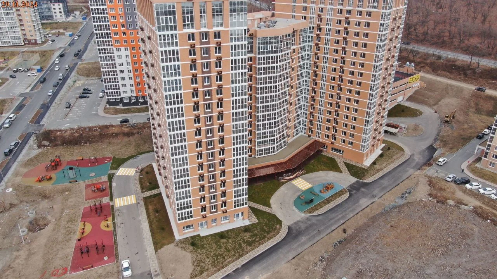
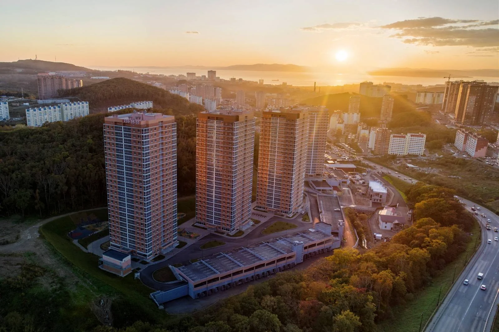
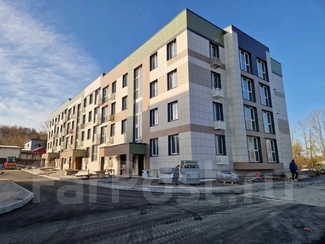
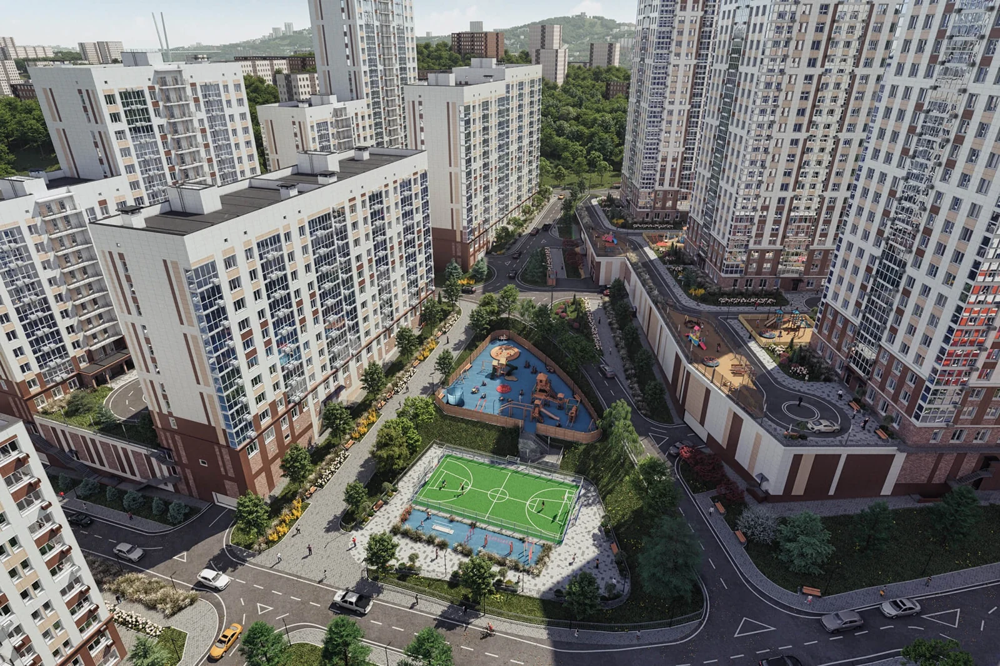
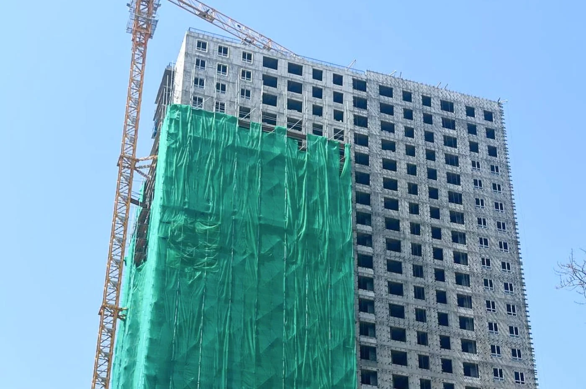
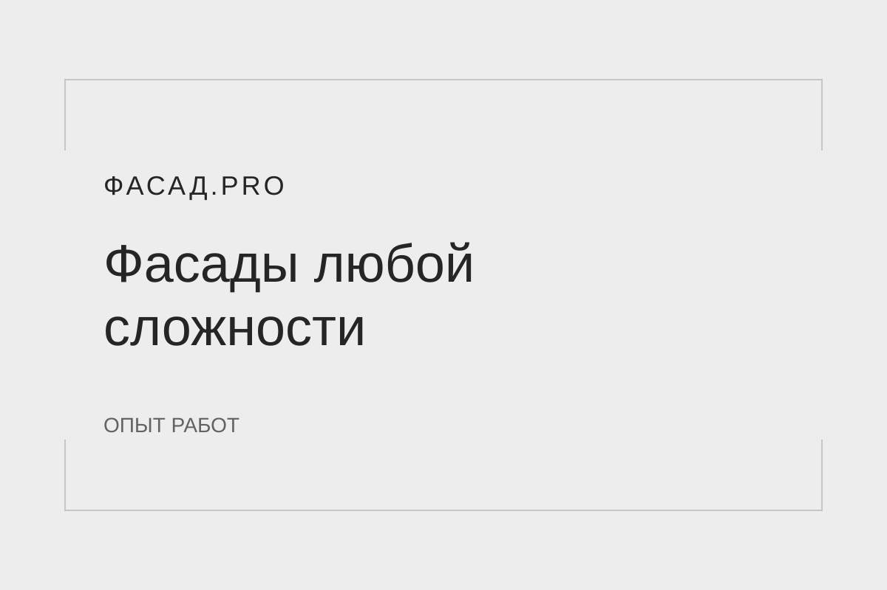

26 000 м²Посмотреть объект
26 000 м²Посмотреть объектМузейно-театральный комплекс
Монтаж светопрозрачных алюминиевых конструкций на объекте со сложной архитектурной геометрией.
Портфолио / 12 объектов
От оконных систем жилых кварталов до сложной геометрии общественных зданий.
Выберите до трёх объектов для сравнения. Направление в карточке открывает похожие работы.
Показано проектов: 12
26 000 м²Посмотреть объектМонтаж светопрозрачных алюминиевых конструкций на объекте со сложной архитектурной геометрией.
 Ремонт фасадаПосмотреть объект
Ремонт фасадаПосмотреть объектРемонт и восстановление алюминиевого фасада. Монтаж светопрозрачных перегородок.
 Фасад и перегородкиПосмотреть объект
Фасад и перегородкиПосмотреть объектРемонт фасада и монтаж светопрозрачных перегородок.

3 215,79 м²Посмотреть объектПоставка и монтаж изделий из ПВХ. Нестандартные витражные решения.
 2 546 м²Посмотреть объект
2 546 м²Посмотреть объектПоставка и монтаж изделий из ПВХ в двух домах. Оконные конструкции в цветном исполнении.
 2 866 м²Посмотреть объект
2 866 м²Посмотреть объектИзготовление, доставка и монтаж окон ПВХ и алюминиевых светопрозрачных конструкций в домах №3–7. В составе работ — алюминиевые витражи и стоечно-ригельная система ФС-50.

1 959 м²Посмотреть объектИзготовление, доставка и установка оконных блоков из ПВХ-профилей в домах №2, №3 и №4 жилого комплекса.

2 144,13 м²Посмотреть объектИзготовление, доставка и установка оконных блоков из ПВХ-профилей в домах №1, №2 и №3 в районе улицы Находкинской, 10.

3 323,80 м²Посмотреть объектМонтаж оконных блоков из ПВХ-профилей в домах №1, №2 и №3 первого этапа строительства жилого комплекса.

2 658,06 м²Посмотреть объектИзготовление и монтаж оконных и балконных блоков из профиля ПВХ для многоквартирного дома в районе улицы Нейбута, 137.
 2 месяцаПосмотреть объект
2 месяцаПосмотреть объектСтроительство отдельного здания: от возведения каркаса до готового объекта. Круглосуточная организация работ и параллельное выполнение нескольких участков.

Входные группыПосмотреть объектИзготовление и замена пластиковых дверей на алюминиевые во входных группах ФОК-1 и ФОК-2 кампуса ДВФУ.
Попробуйте другое название или сбросьте фильтры.
Расскажите об объекте — обсудим подход к работам.